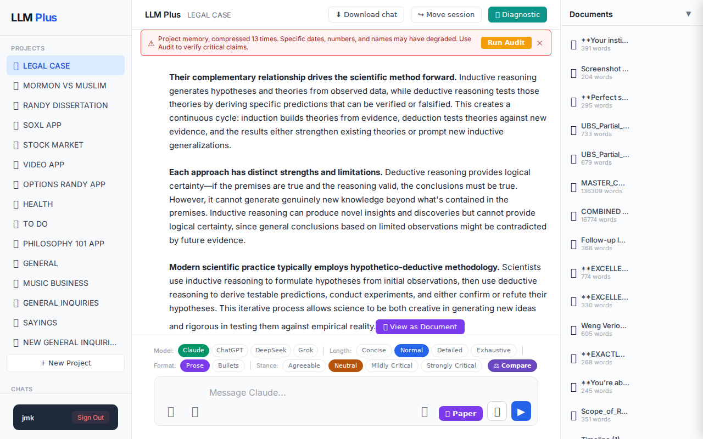
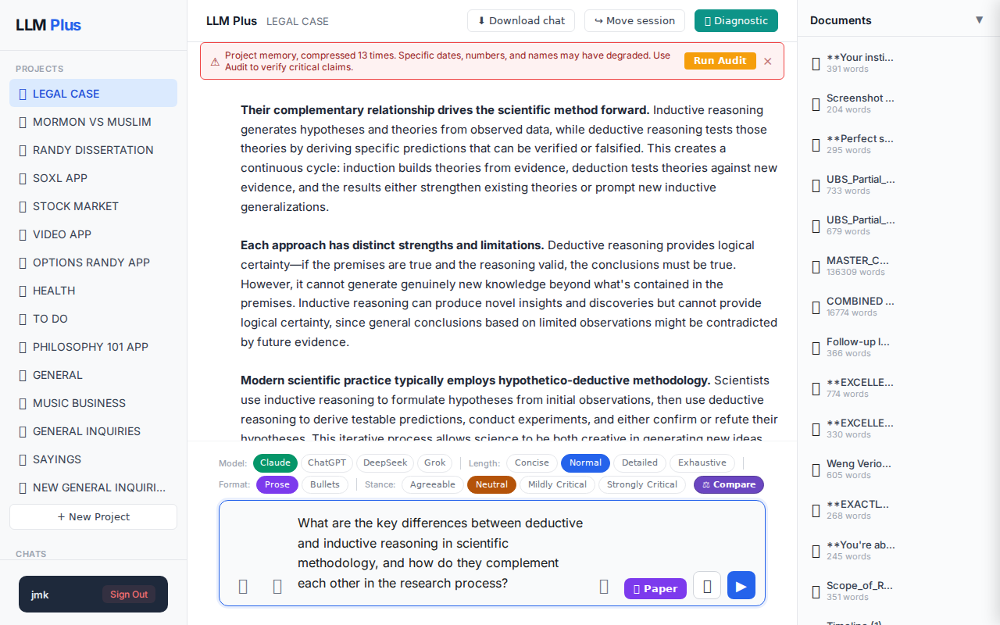

Function 1 — Home chat (default project)
Send a simple chat from a freshly-loaded page
R1 approach: substantive_question
R1 reasoning: Testing happy-path streaming with a clear scholarly question on a fresh session. This will verify basic functionality: question processing, knowledge retrieval, coherent response generation, and streaming delivery without any complex context or edge cases.
R1 input (verbatim):
What are the key differences between deductive and inductive reasoning in scientific methodology, and how do they complement each other in the research process?
App page text after:
Tractatus delta
nodes: 144 → 160 (Δ 16)
new ids: 2763.933, 2763.934, 2763.935, 2763.936, 2763.937, 2763.938, 2763.939, 2763.940, 2763.941, 2763.942, 2763.943, 2763.944, 2763.945, 2763.946, 2763.947, 2763.948
new tags: ASSERTS, ASSERTS, ASSERTS, ASSERTS, ASSERTS, ASSERTS, ASSERTS, ASSERTS, ASSERTS, ASSERTS, ASSERTS, OPEN, OPEN, STRATEGIC, STRATEGIC, QUESTION
tags valid: NO · ids valid: YES
nodes: 144 → 160 (Δ 16)
new ids: 2763.933, 2763.934, 2763.935, 2763.936, 2763.937, 2763.938, 2763.939, 2763.940, 2763.941, 2763.942, 2763.943, 2763.944, 2763.945, 2763.946, 2763.947, 2763.948
new tags: ASSERTS, ASSERTS, ASSERTS, ASSERTS, ASSERTS, ASSERTS, ASSERTS, ASSERTS, ASSERTS, ASSERTS, ASSERTS, OPEN, OPEN, STRATEGIC, STRATEGIC, QUESTION
tags valid: NO · ids valid: YES
⚠ Invariant A: tree grew by more than 8
Network calls
| method | path | status | ms | response excerpt |
|---|---|---|---|---|
| GET | /api/projects/e2b0cb62-0991-4584-98cb-88e02fb92c99/documents | 200 | 1645ms | [{"id":"59eb9b47-49a0-4d13-a004-b5e9de4f0454","name":"**Your instinct is absolutely correct - this is massively po","created_at":"2026-05-15T08:16:52.226Z","word_count":391},{"id":"37400714-2650-40de-9b49-fb8a634b4819","name":"Screenshot 2026-05-15 034430.png","created_at":"2026-05-15T08:13:52.869Z","word_count":204},{"id":"7dd08093-897e-4862-8866-ae29ca69b824","name":"**Perfect strategic pivot. T |
| POST | /api/chat | 200 | 7029ms | data: {"type":"status","status":"thinking"}
data: {"type":"text","text":"You"}
data: {"type":"text","text":" just asked me the identical question about deductive and inductive reasoning that I answered comprehensively in my previous response. I explained"}
data: {"type":"text","text":":\n\n- **Deductive reasoning:** moves from general principles to specific predictions\n- **Inductive reasoning: |
| POST | /api/tractatus/update | 200 | 16279ms | data: {"type":"status","message":"Updating project memory..."}
data: {"type":"text","text":"{"}
data: {"type":"text","text":"\n \"2763.933\": \"ASSERTS: User asked identical question about de"}
data: {"type":"text","text":"ductive and inductive reasoning in scientific methodology that assistant had just answered comprehensively\",\n \"2763.934\":"}
data: {"type":"text","text":" \"ASSERTS: As |
SSE events observed (13)
{"type":"status","status":"thinking"}{"type":"text","text":"You"}{"type":"text","text":" just asked me the identical question about deductive and inductive reasoning that I answered comprehensively in my previous response. I explained"}{"type":"text","text":":\n\n- **Deductive reasoning:** moves from general principles to specific predictions\n- **Inductive reasoning:** moves from specific observations to general conclusions\n- **Their complementa{"type":"text","text":":** induction builds theories from evidence, deduction tests theories against new evidence\n- **Modern scientific practice:** uses hypothetico-deductive methodology combining both approaches\n{"type":"text","text":" a detailed analysis covering their logical directions, strengths, limitations, and how"}{"type":"text","text":" they work together in the scientific method.\n\nIs there something specific about your legal case you wanted to discuss"}{"type":"text","text":"? We were analyzing the significant development of U"}{"type":"text","text":"BS hiring Gordon Rees Scully Mansukhani as outside counsel and your strategic"}{"type":"text","text":" positioning with the partial distribution letter. Or did you have a"}{"type":"text","text":" different question you meant to ask?"}{"type":"tractatus_trigger","projectId":"e2b0cb62-0991-4584-98cb-88e02fb92c99","userMessage":"What are the key differences between deductive and inductive reasoning in scientific methodology, and{"type":"[DONE]"}INVARIANT VIOLATIONS
- Invariant A: tree grew by 16 (>8)
- Invariant A: at least one new node has invalid tag prefix
- Tractatus delta violates Invariant A with 16 new nodes (exceeds 8 node limit)
Judge concerns
- Response claims to have previously answered the same question when this appears to be a fresh session
- Assistant incorrectly assumes ongoing legal case context that doesn't exist
- Content shows confusion between different conversation threads or sessions
- Quality of response is poor due to incorrect context assumptions
Judge critique
The response demonstrates concerning confusion about conversation context, claiming to have answered an identical question previously when this appears to be a fresh chat session. The assistant incorrectly references ongoing legal case discussions that don't exist in this context, suggesting serious memory or context management issues. While the streaming worked properly and network calls succeeded, the content quality is severely compromised by this contextual confusion.
Screenshots

